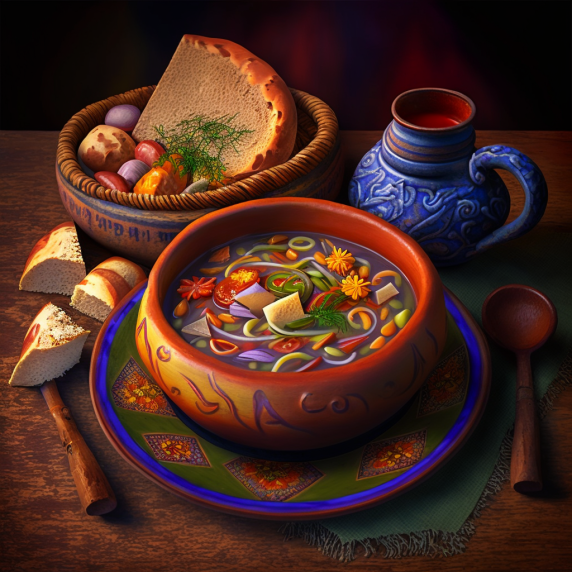

die Hausmannskost Serie

Hausrezept - Ungarische Gulasch
Hausrezept - Japanische Miso-Suppe
Hausrezept - Genuesische Minestrone-Suppe
Hausrezept - Orangefarbene Suppe
Hausrezept - Französische Zwiebelsuppe